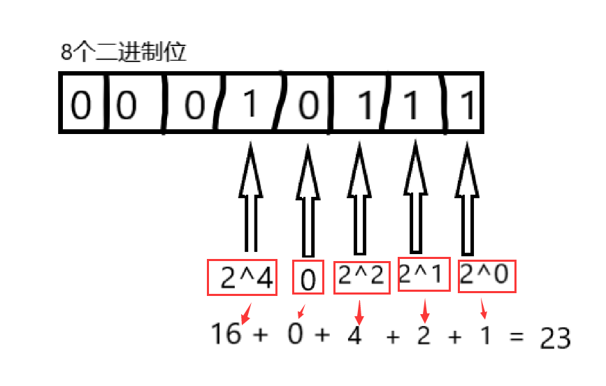
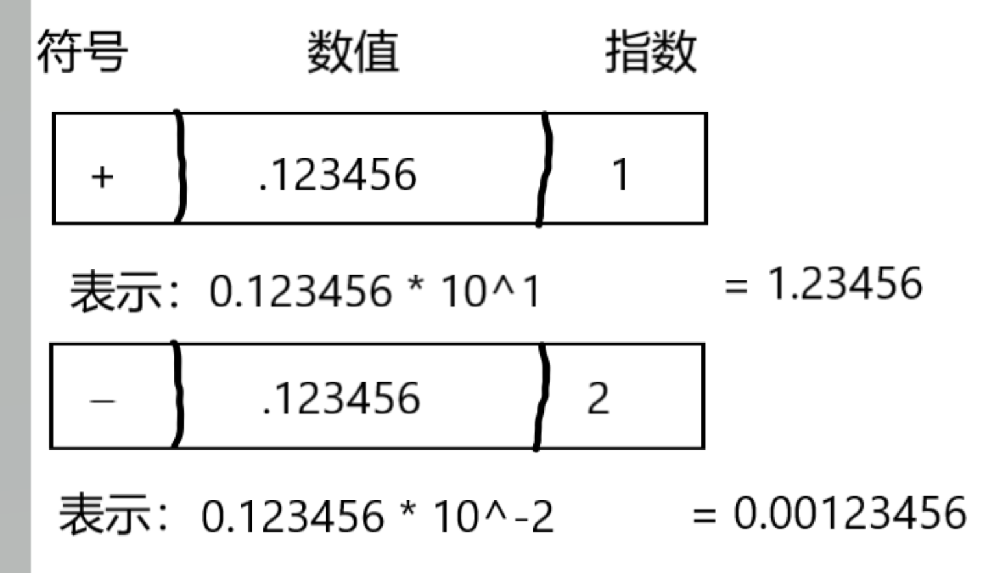
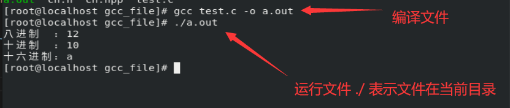
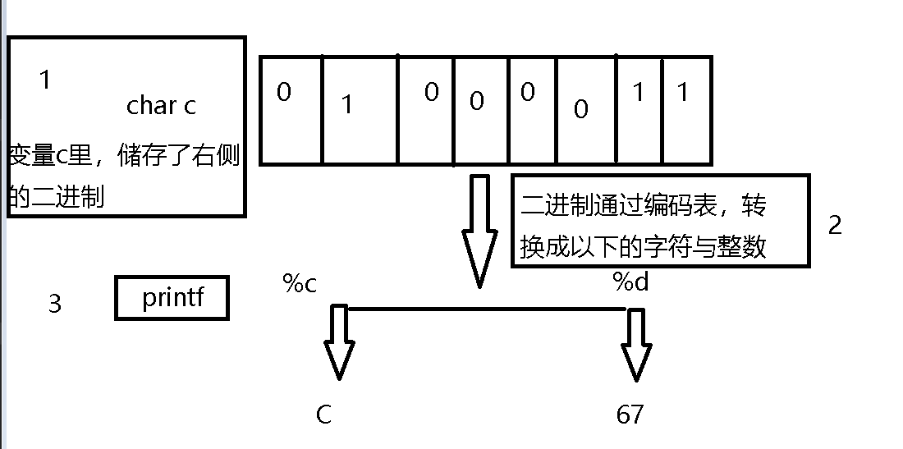
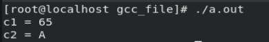
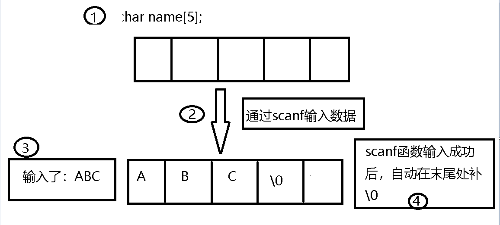
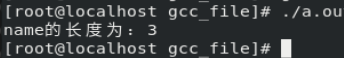
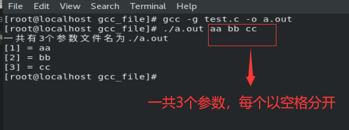
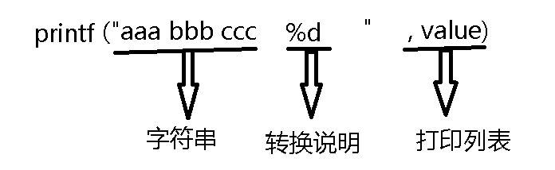
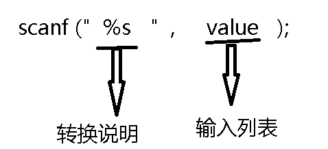

基于操作系统CentOS8与GCC8.2
粗略总结C语言

数据类型
数据的最基本类型，有整数，小数与字符类型，其中数字由整数与小数类型存储，字母与符号用字符类型存储
带符号类型 与 不带符号类型
带符号类型表示这个类型没有负数，并且表示的范围更大
不带符号类型表示这个类型有负数例子：char类型带符号 与 不带符号的范围
类型 写法 范围 带符号char char （或signed char） -128~127 不带符号char unsigned char 0~255
整数类型
| 名称 | 长度 | 占用的位数 |
|---|---|---|
| short | 短整型 | 16 |
| int | 整形 | 16 或 32 |
| long | 长整形 | 32 |
| long long | 更长的整形 | 64 |
C规定short不能比int大，long不能比int小
整形溢出
整数的溢出，会导致数值重置 （时钟就是一个例子，超过12就会重置到1）
就拿char来做例子，127 + 1，其结果为 -128
位与字节
位bit
计算器最小的存储单位，可以存储0或1（开或关）
字节byte
计算器最常用的存储单位
1byte = 8bit
即长度为2^8=256
范围0-255
二进制转换成十进制的例子
计算器由0和1组成，也就是二进制
二进制，是给机器看的 （只有0或1）
十进制，是给人看的 （范围：0~9）

如上图所示，最前面的那些0可以舍弃
二进制1101 转换成 十进制也是23
浮点数(小数)类型
| 名称 | 长度 |
|---|---|
| float | 单精浮点数 |
| double | 双精浮点数 |
| long double | 长浮点型 |
计算机将浮点数分成 整数与小数部分，并且分开存储
浮点数表示的范围比整数大
E记数法
3.14E+3 表示 3.14 * 10^3 （10^3 = 1000， 3被称为10的指数）
3.14E-4 表示 3.14 * 10^-4（10^-4 = 0.0001）

将整数类型打印到显示器
8，10，16进制的打印方式
需要导入C库文件
stdio.h获取printf函数通过传入 参数 进printf函数，将数据显示到显示器
创建文件，格式为： 自定义名称.c
C语言默认的整数类型是int
2
3
4
5
6
7
8
9
10
11
12
13
14
15
16
17
18
19
20
21
22
23
24
25
26
27
28
// test.c
#include：头文件导入语句
<stdio.h> ：需要导入的文件（用<>包起来的，表示这是C库的文件）
简单的理解是，将stdio.h这个文件里的内容 导入到你的文件里
*/
#include <stdio.h>
/*
main函数，程序运行的入口
可以简单理解为，代码需要经过main函数才会执行
*/
int main(){
int number = 10; // 变量number，存储int整形，数值为10
// \n 换行符
printf("八进制 ：%o\n十进制 ：%d\n十六进制：%x\n",number,number,number);
printf("---------------分割线---------------\n");
// 显示进制前缀版
printf("八进制 ：%#o\n十进制 ：%#d\n十六进制：%#x\n",number,number,number);
return 0; // 这是一个返回值，在main函数里返回0表示程序没有出问题
}
写法 描述 %o 八进制 %d 十进制 %x 十六进制 >如果需要显示进制前缀，需要在%后面加个 #例子： #%d

指定打印其他整数类型
2
3
4
5
6
7
8
9
10
11
12
13
14
15
unsigned int n1 = 11;
short n2 = 22;
long n3 = 33;
long long n4 = 44;
// 指定输出为unsigned int类型
printf("这是无符号类型int n1 = %u\n", n1);
// 指定输出为 short 类型
printf("这是short类型 n2 = %hd\n", n2);
// 指定输出为 long 类型
printf("这是long类型 n3 = %ld\n", n3);
// 指定输出为 long long 类型
printf("这是long long类型 n4 = %lld\n", n4);
写法 类型 %u unsigned int %hd short %ld long %lld long long
字符类型
存储的是整数，通过编码表，转换成字符
一个字符占 1bit

转换例子
默认使用ASCII编码表，65表示A
2
3
4
5
6
char c1 = 'A',
c2 = 65;
printf("c1 = %d\nc2 = %c\n", c1, c2);
转义字符
用到转义符\
常用的转义符有：
写法|功能
-|-
\n|换行
\t|制表符 （多个空格）
'|一个 ‘
"|一个 “
\|一个
\0|空字符
布尔类型
用作于判断 真假，0表示假，0以外的数值表示真
打印浮点数
1 | // test.c |
| 写法 | 类型 |
|---|---|
| %f | float 或double |
| %lf | long double 或 double |
| %e | float和double 指数计数法 |
| %Le | long double 指数计数法 |
常量
必须初始化，并且值不能修改
创建宏常量
使用到C预处理
#define（宏）预处理是在 程序运行前 所运行的程序
文件运行流程：代码 -> 预处理 -> 编译 -> 运行
常量格式：
#define NAME VALUE
宏的名称必须是全部大写
1 | // test.c |
创建const常量
- 使用到关键字
const
字符串
字符串是由多个字符所组成的，并且每个字符串的最后的一个字符是\0
用""引起来的字符串自动添加\0
字符串的输入输出
创建一个数组
类型 名称 [大小];
scanf函数，输入函数，你可以往程序里输入内容，遇到空白，换行符则会停止%s 表示这是一个字符串
将输入的数据，存储进字符数组name里
键盘是一种输入设备
数据输入成功后，会自动在末尾处添加\0
输出数据 （printf其实就是将数据输出到输出设备）
显示器就是一种输出设备
1 | // test.c |

获取字符的长度
使用到头文件
#include <string.h>里的strlen函数strlen函数无视空字符
1 | // test.c |

初始化字符串
char c[100] = “ABC\0”;
char *cp = “ABC”;
字符串函数
| 函数 | 功能 |
|---|---|
| puts (str) | 输出示字符串，并自动加换行符 |
| gets (str) | 一次读取一个单词，因为不判断数组字符串是否能装下用户输入的字符串，会有溢出的问题，会丢弃\n |
| fgets (str, n, input) | 功能与gets一样,获取n-1个字符（字符串的最后一个字符必定为\0，假如输入的字符大于下次限定，数据将会储存在缓冲区里），\n会停止读取，不会丢弃\n，返回值为指向这个字符串的指针，输入EOF将停止该函数并且返回空指针（EOF不会被读取） |
| gets_s (str, n) | 功能与gets一样，第二个参数限制读入字符串，丢弃\n，没有读取到\n则会将首字符设置为\0，返回一个空指针 |
| fputs (str, n ,output) | 功能与puts一样限制输入，不会自动在末尾处加\n |
| strcat (str1, str2) | 拼接字符串，将第二个字符串添加到第一个字符串的末尾处，不判断str1的大小是否能容纳str2，返回指向str1第一位置的指针 |
| strncat (str1, str2, n) | 拼接字符串，n为需要拷贝str2的字符数量，返回指向str1第一位置的指针 |
| strcmp (str1, str2) | 字符串比较，传入数组（相同返回0，str1的字符比str2的字符多返回1，少则返回-1），传入指针（相同返回0，不同则返回第一个不同字符ASCII的差值） |
| strncmp (str1, str2, n) | 字符串比较类似strcmp，第三个参数为比较str2，n个字符数量 |
| strcpy (str1, str2) | 字符串拷贝，str2的字符串拷贝给str1，返回str1的第一个位置 |
| strncpy (str1, str2, n) | 字符串拷贝，类似strcpy，第三个参数为指定从str2拷贝n个字符到str1 |
| sprintf (str, str_format, …) | 用类似printf的格式写入到字符串参数1为目标字符串，参数2为格式，参数3为参量表 |
| strchr (str, char c) | 查找第一次出现的字符，并以指针的形式返回，找不到则返回空指针 |
| strpbrk (str1, str2) | 在str1查找str2中的任意字符，返回str1首个指向str2中的字符的指针，str1里没有str2任意一个字符则返回空指针 |
| strrchr (str, char c) | 查找最后一个出现的字符，并以指针的形式返回，找不到返回空指针 |
| strstr (str1, str2) | str1里查找 str2出现的首位置，找不到返回空指针 |
| atoi(str) | 将字符串转换成int类型 |
| atol(str) | 将字符串转换成long类型 |
| atof(str) | 将字符串转换成double类型 |
| strtol(begin, &end, 进制类型) | 将字符串转换成long类型 |
| strtoul(begin, &end, 进制类型) | 将字符串转换成unsigned long类型 |
| strtod(begin, &end) | 将字符串转换成double类型，只能转成10进制 |
命令行参数
argc记录参数的数量 （文件名也算一个）
argv记录每行参数，以字符串形式
argv第一个索引的字符串为当前文件的名称
1 | // 使用特殊的main函数 |

使用命令行参数，控制循环次数的例子
最多只能有一个参数
循环次数至少有一次
2
3
4
5
6
7
8
9
10
11
12
int i = 0; // 记录第一个参数，即循环次数
if(argc != 2 || (i = atoi(*(argv+1))) < 1){
printf("输入错误\n");
return 1;
} else {
for(int j =0; j != i ; ++j){
printf("[%d] is ok\n", j);
}
}
return 0;
}
运算符
用于操作数据的符号，例如算数运算符，逻辑运算符，比较运算符
sizrof
使用sizeof，获取类型所占用的字节数(bit)
sizeof(类型);
返回一个整数类型，表示该 类型 所占的bit大小
1 | // test.c |
算数运算符
| 写法 | 作用 |
|---|---|
| + | 加法 |
| - | 减法 |
| * | 乘法 |
| / | 除法 |
| % | 取模 |
| ++ | 自增1 |
| – | 自减1 |
前自增(减)，先自增(减)在运算
后自增(减)，先运算在自增(减)
比较运算符
| 写法 | 作用 |
|---|---|
| < | 小于 |
| > | 大于 |
| == | 等于 |
| != | 不等于 |
| <= | 小于等于 |
| >= | 大于等于 |
逻辑运算符
| 写法 | 作用 |
|---|---|
| ! | 非 |
| || | 或 |
| && | 与 |
赋值运算符
| 写法 | 作用 |
|---|---|
| = | 赋值运算符 |
| += | 自身加上其他值 |
| -= | 自身减去其他值 |
| *= | 自身乘其他值 |
| /= | 自身除其他值 |
| %= | 自身取模其他值 |
1 | // 例子 |
三元运算符
条件 ? true的处理 : false的处理
1 | // test.c |
表达式与语句
;语句符
1 + 1 // 加法表达式，值为2
int i = 1; // 表达式语句
每个表达式都会有一个值
控制语句
用于控制程序的语句，循环，判断
循环
如果添加一直为 真，则会造成死循环
while语句while(条件）
for语句for(变量; 条件; 数值的操作)
1 | // test.c |
1 | // test.c |
出口循环
至少会执行一次的循环 （第一次判断条件为假的情况下）
1 | //写法 |
1 | // test.c |
判断
if 如果
if(条件)
else 否则
else if 但是
else if(条件)
1 | // test.c |
多重选择
switch(条件)
case ‘a’ 判断条件
break 跳出
如果case没有break，程序会执行到break或switch结束
default 功能与else一样
1 | // 例子 |
功能关键字
| 写法 | 作用 |
|---|---|
| break | 跳出当前代码块 （终止当前判断或循环） |
| continue | 跳过 |
函数
将功能包装的方法
函数的定义：
返回值类型 函数名 (参数列表)
返回有返回值类型的话，必须要为其返回一个值
参数分两种
- 形参
将传入的参数是一份拷贝，在函数里修改其数值，外部数据不会改变
int test (int)- 实参
传入的参数是本体，在函数里修改其数值，外部数据也会改变
int test (int*)
例子
int 为返回值类型
double d为 函数需要传入的参数
return 0 表示返回数值0，函数结束 （只有单个return则直接退出函数）
1 | int test (double d) { |
递归函数
递归：自己循环式的调用自己，每个递归必须有一个出口，非常消耗内存
数组与指针
存储多个数据的内存空间
数组的名称是一个指针
指针通过 自增 和 自减 可以获取它的上一个 或 下一个元素
数组
数组的定义：
类型 数组名称[常量整数（数组长度）]
数组通过索引
[]去寻找元素索引从0开始
C语言的const是运行时常量，c++的const是编译时常量
注意：数组长度使用了变量则会变成变长数组
变长数组只是数组长度使用了变量，其余的与普通数组没区别
1 | // 数组的初始化 |
多维数组
嵌套数组，存储数组的数组
1 |
|
多维数组另一种初始化方式
1 | int arr[2][3] = {1,2,3, 4,5,6}; |
指针
指针会指向内存的地址值，通过指针可以直接操作内存
一个地址值占8字节
指定的定义：
类型 *名称
&i 获取变量i的地址（=前的&是别名，=后的&是去地址）
int *p 创建一个指针
*p 解引指针，获取指针里的值
printf 的 %p 输出指针的地址值
++p，等同于p+=1，会修改指针的地址值
p+1，返回一个右值，不会修改指针的地址值
1 | int i = 11; |
解引或使用 未初始化的指针（空指针）或导致未知的错误
多级指针
1 | int *p; // 一级指针 |
指针指向多维数组
1 | int array[1][2]; |
函数指针
1 | int m(double*); |
作为函数参数的数组
形参
void m (int arr[]);
实参
void m (int *arr);
获取数组长度
sizof(arr)获取arr所占用的bit数
sizeof(arr[0])获取int类型所占用的bit数
1 | int arr[] = {1,2,3}; |
变长数组作为函数参数
1 | int m (int i, int i2. int arr[i][i2]); |
匿名数组
1 | int *p = (int [2]){1, 2}; |
空间管理
管理内存空间的作用域 与 生命周期
左值与右值
左值的生命周期长，右值的生命周期短（生命周期即将结束）
i为左值
test()返回的值是右值，没有指向左值的话就会立马失效
1 | int i = test(); |
作用域
这是程序的生命周期，一旦出了作用域，程序就会失效
1 | { // 这是一个作用域 |
链接
编译后产生的文件，它会和目标文件与系统的组件组合成一个可执行文件
目标文件 -> 编译 -> 生成链接 -> 可执行文件
当前文件以外的文件可以使用
外部链接变量可以用在多文件程序里使用
关键字：extern
只能在当前文件使用
内部链接变量只能在一个文件中使用
只能在当前代码块里使用
块作用域，函数作用域，函数原型作用域的变量都是无连接变量
这表示了这些作用域里的变量都是私有的
存储期
静态存储期
用关键字
static标识，程序执行期间一直存在线程存储期
从被声明到线程结束一直存在
自动存储期
块作用域具有自动存储期，程序进入块时，才会为变量分配内存
关键字：auto
动态分配存储期
可以根据需要设计扩大（或缩小）
寄存器变量
寄存器变量存储在 CPU的寄存器里，访问这些变量非常快
由于寄存器不是内存，所有没法获取寄存器变量的地址值
寄存器类似于自动变量
寄存器变量关键字
register
1 | register int i; |
定义与声明
定义只有一个，声明可以有多个
1 | int i = 1l; // 定义int类型变量i，值为11 |
内存操作
需要头文件#include <stdlib.h>
创建动态内存
| 函数 | 功能 |
|---|---|
| void* malloc (n) | 向内存申请n bit的空间，并返回一个指针指向这个空间 |
| calloc (n, n2) | 类似malloc，两个参数为无符号类型，n为数量，n2为类型大小 |
void*任意类型指针，使用前需要强转
// 申请3个int类型大小的内存空间
int p = ( int* ) malloc(3 * sizeof(int));
释放动态内存，若用完的动态内存不及时释放，则会操作内存泄漏，会导致内存越来越小
| 函数 | 功能 |
|---|---|
| free (动态内存指针) | 释放动态内存 |
创建一位数组与多维数组
1 | // 等同于int arr[2]; |
I/O
I(input)输入， O(output)输出
printf函数
输出函数

该函数返回值，会返回打印字符的个数
返回负数则表示出错
| 转换说明 | 功能 |
|---|---|
| %+5d | 打印5个字符 （少于5个字符则在最前面补空格，补到5个字符为止） |
| %-5d | 打印5个字符 （少于5个字符则在最后面补空格，补到5个字符为止） |
| %z | size_t类型 （机器无符号整形） |
| %.2f | 打印浮点数时，只保留2个小数位 |
scanf函数
输入函数

输入列表是变量，则需要在变量名前加一个& （取其变量的引用）
数组不用加& （因为数组名称本身就是一个指针）
单字符I/O
| 函数名 | 功能 |
|---|---|
| getchar() | 从标准输入里输入一个字符 |
| putchar(int) | 从标准输出里一个字符，包括空格与换行符 |
1 | char c; |
缓冲区
一个用于数据缓冲的空间，当缓冲区满了的时候，会自动刷新缓冲区，将缓冲区里的数据输出
I/O函数与常量
需要#include <stdio.h>
fpost_t文件定位类型
| 函数 | 功能 |
|---|---|
| fopen (文件目录, 打开格式) | 打开文件 |
| getc (文件指针) | 从文件获取一个字符 |
| putc (ch, 文件指针) | 将字符ch放进文件里 |
| fclose (文件指针) | 关闭文件，返回值为0则成功 |
| fseek (fp, n, 格式) | 修改文件当前位置 |
| ftell (fp, n, 格式) | 修改文件当前位置（二进制） |
| fgetpos (FILE, fpos_t) | 显示文件当前位置，描述文件当前位置到fpos_t的距离，返回0则成功 |
| fsetpos (FILE, const fpos_t) | 修改文件当前位置，返回0则成功 |
| ungetc(int c, FILE*) | 将下次读取文件的位置设置为c |
| fflush (FILE* f) | 将缓冲区未写入的内容写到f |
| setvbug (FILE* , char* buf, int 功能, size_t 数组大小) | 为指定文件创建一个指定的缓冲区 |
| fwrite (buf, 写入数据的大小, 数据的数量, FILE*) | 二进制写入 |
| fread (buf, 写入数据的大小, 数据的数量, FILE*) | 二进制读取，出错或读取到EOF则停止运行 |
| 常量 | 功能 |
|---|---|
| EOF | 文件尾 |
| stdin | 标准输入 |
| stdout | 标准输出 |
| stderr | 标准错误 |
| SEEK_SET | 文件首位置 |
| SEEK_CUR | 当前位置 |
| SEEK_END | 文件末尾处 |
数据结构
将一堆不同的数据，封装到一个类型
struct创建自定义类型
.成员访问符
struct test{
int i;
double b;
char c[10];
};
struct test t;
/* 声明并定义 */
struct test{
int i;
double b;
char c[10];
}t2;/* 匿名结构 */
struct{
int i;
double b;
char c[10];
}t3;
struct test t = {
.i = 1,
.d = 1.1,
.c = “AAA”
};
t.i;
t.b;
t.c;
union只能存储一种类型数据的数据类型
联合类型，它只能存储一种类型的数值，用法和struct一样
union u{
int ii,
double dd,
char cc[10]
};struct u dx;
dx.ii = 11; // 此时dx里ii有值dx.dd = 11.11; // 此时dx里只有dd有值，ii的值被删除了
enum用自定义名称，代表数值
枚举类型，是一种常量，用法和struct一样
enum e {
red = 1,
blue = 2,
green = 3
}dx_e;int i = dx_e.red;
typedef取别名
typedef int mytype // mytype是int类型的别名
mytype i = 11; // int i = 11;
创建返回值类型的结构体
1 | typedef struct{ |
位操作
位运算符
用来操作二进制
| 符号 | 功能 |
|---|---|
| ~ | 按位取反，11得0, 00得1 |
| & | 按位与，11得1 |
| | | 按位或，11得1 ，10得1 |
| ^ | 按位异或，10得1， 00得0， 11得0 |
| << | 左移，将二进制位向左移动n位，丢弃左边的位，右边的位补0 |
| >> | 右移，将二进制位向右移动n位，丢弃右边的位，左边的位补0 |
位字段
用来操作二进制的第二种方法
prnt有2个1位的字段
因为字段只有1位，所有只能赋值为0或1
可以直接通过
.成员访问符 进行赋值
1 | struct { |
prnt2里有一个2位的字段与一个8位的字段
要确保赋的值不能超过字段可容纳的大小
1 | struct { |
匿名字段，有值但没有名称
空洞字段，没值没名称，会迫使下一个字段与下一个整数对齐
1 | struct { |
预处理器
#define宏
可以创建常量与函数
- #创建字符串
1 | #define NUM 11 //宏常量 |
#include文件包含
| 写法 | 功能 |
|---|---|
| #include <> | 系统目录文件 |
| #include “” | 自定义目录文件 |
其他宏
| 写法 | 功能 |
|---|---|
| #undef name | 取消宏定义 |
| #ifdef name | if， name存储则true |
| #else | #ifdef与#ifndef的else |
| #ifndef name | name不存在则true |
| #endif | 结束当前#ifdef或#ifndef |
| #if | 非0则true |
| #elif | #if的else语句 |
| DATE | 预处理日期Dmm dd yyyy |
| FILE | 当前的文件名 |
| LINE | 行号 |
| STDC | 设置为1则遵守C标准 |
| STDC_HOSTED | 设置为1则使用本机环境 |
| STDC_VERSION | 199901L表示C99，201112L表示C11 |
| TIME | 编译时间hh:mm:ss |
| #line | 指令重置 |
| #error | 让预处理器发出错误信息 |
C库
查看数值类型的范围
| 整数类型的范围 | 浮点数类型的范围 |
|---|---|
| #include <limits.h> | #include <float.h> |
字符处理#include <ctype.h>
C标准库#include <stdlib.h>
字面值常量
以下各种类型的值，都为字面值，并且是常量
1 | char c = 'c'; |